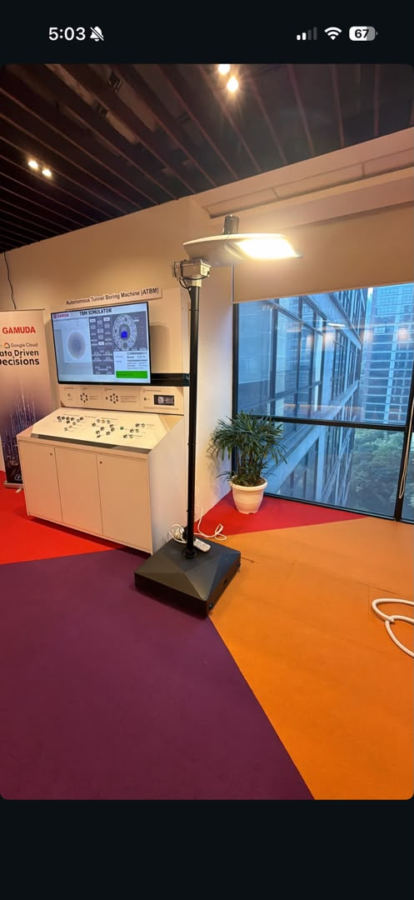

This is a handover document — everything needed to pick up this project: how the system works, how to reach the Pi, current status, and things to watch out for. All reference files it links to are in this same folder, and the whole project (code + this doc set) is also on GitHub — see the Quick Reference table below.

The physical light, deployed and running.
| Node-RED editor | http://raspberrypi.local:1880/ (or http://192.168.0.127:1880/ — IP may change on reboot, prefer the hostname) |
|---|---|
| Node-RED dashboard | http://raspberrypi.local:1880/ui/ — the "Light energy" live-sensors dashboard (gauges/chart) |
| GitHub repo | github.com/Ivanlim556/streetlight — full code history + this handover doc set (in handover-docs/). Public repo, so it also contains the Pi password below in cleartext — only someone who can already reach the Pi on its local network could use it, but be aware it's out there. |
| SSH to Pi | ssh pi@raspberrypi.local — key-based auth already set up from this laptop, no password needed. (Old IP 192.168.0.45 was the Pi 5; retired after migration.) |
| Pi IP address | 192.168.0.127 — use if the raspberrypi.local hostname doesn't resolve. Confirmed current 2026-09-24; may change on reboot since it's DHCP-assigned, prefer the hostname when possible. |
| PS | 0123456789 |
| GIMS Cloud Run API | https://gims-api-744852476592.asia-southeast1.run.app |
| GIMS GCP project | gtech-sb-yeapwengyeow-dev |
| GIMS Smart Streetlight project UUID | 32502814-cc6e-5b81-a2fe-f3a04fa9633b |
| GIMS tenant ID | 761988e2-8b8b-4f66-882d-a4d844561266 |
| Lumilite light UUID (dim target) | 3d354308-8546-59ff-a564-436305cb7cf0 |
| Pi sensor node UUID | 35c0bd55-401d-5a5f-9afc-fee9806d0efe — confirmed via GET /api/v1/devices, name "Pi Sensor Node (Pole 1)" |
Normal case: the Pi and the light pole are both here in the office, on the same network as any office laptop. From a laptop on that network:
ssh pi@raspberrypi.local
Key-based auth is already set up from the laptop this was developed on — no password needed there. On a different laptop, you'd need either the password (ask supervisor/IT if not already known) or to copy that laptop's own SSH public key into /home/pi/.ssh/authorized_keys on the Pi once, using the password.
If raspberrypi.local doesn't resolve or times out, work through this in order — every step here is something we actually hit during this project:
Talking to GIMS (from the Pi, or from Node-RED running on it) always uses the same pattern: a Google service-account key file already on the Pi (/home/pi/sa-key.json) plus the tenant ID from the Quick Reference table above, sent as an X-Tenant-Id header alongside a Google-issued auth token. Full detail in gims-reference.md — nothing here needs to change per-request, the tenant ID and key file are fixed.
The Pi reads its sensors continuously and does two independent things with the data: it feeds a local dashboard/automation loop over MQTT, and separately reports readings straight to GIMS. Nothing in this system waits on GIMS to be reachable — it's designed to keep running locally even if the cloud side is down.
Sensor loop (every 2s, in streetlight_sensors.py): reads BH1750 (lux) and BME280 (temperature) over I2C, and watches the PIR pin continuously. Every reading publishes to the local Mosquitto broker on streetlight/1/<metric>. Motion publishes both immediately on a state change (0→1 or 1→0, for responsiveness) and again every 2 seconds regardless of change — so Node-RED's cached motion state never goes stale during a long PIR hold. (PZEM power monitoring was attempted but abandoned — see Cautions. The script still handles a PZEM read failure gracefully, it just never succeeds since nothing is connected.)
Telemetry to GIMS (every 30s, same script): the latest lux/temp/voltage/power readings are POSTed straight to /api/v1/edge_devices/{id}/telemetry using a Google ID token — this is a separate path from MQTT/Node-RED entirely.
Dashboard + automation (Node-RED, continuous + every 3s): Node-RED subscribes to all streetlight/1/# topics. Every message updates the live dashboard immediately (Lux, Temperature, and Motion — the voltage/power widgets were removed 2026-09-24 after PZEM was abandoned), and the lux/motion values are also cached into flow context. Separately, a timer fires every 3 seconds, reads that cached context, and computes a target dim level: 10 (idle) if there's no motion and it's been more than 5 seconds since motion last stopped, otherwise 100 (lux<30, genuinely dark) or 50 (any other ambient, i.e. motion detected and it's not near pitch-black). A command is only actually sent to GIMS when this computed level changes from the last one sent (via an RBE node) — so the light isn't being re-commanded 20 times a second even though the loop checks that often. (Simplified to this 3-level, single-cutoff scheme on 2026-09-25 — the earlier 2-cutoff scheme needed re-tuning every time the sensor was repositioned or ambient changed; one low cutoff near true darkness means the "else" bucket absorbs whatever ambient the site actually has, so it shouldn't need retuning again. The old 4-level scheme is tagged before-3level in git if it's ever needed back.) The computed level itself (not just the GIMS command) is also shown live on the dashboard — a "Brightness Level" gauge and a "Level History" chart, added 2026-09-24, both update every 3 seconds off the same timer regardless of whether a command was actually sent to GIMS.
Dim command round-trip: when the level changes, Node-RED authenticates with the same Google service account (sa-key.json) and POSTs {targetDeviceId, method:"dimTo", params:{level}} to /api/v1/commands, then polls GET /api/v1/commands/{id} a couple seconds later to confirm GIMS actually delivered it to the physical light.
Known quirk, now fixed: motion used to only publish on state change, so a PIR module with a long internal hold time could keep Node-RED's cached state stale/stuck long after a person actually left. The 2-second continuous re-publish (above) fixes that — Node-RED's motion state is now never more than 2s out of date. What still matters is the PIR hardware's own Time-Delay potentiometer (currently ~10s ± 3s), which controls how long the PIR itself reports "motion" after a person leaves — that's a real-world sensor characteristic, not a software staleness bug, and it's now longer than Node-RED's own 5-second software cooldown, so the PIR is the actual bottleneck on how fast the light drops back to idle.
Known open issue — lux self-detection feedback: the lux sensor can pick up the streetlight's own output, not just external ambient light, creating a potential feedback loop (dark → light goes full bright → sensor now sees its own glow → reads "brighter" → dims down → sees less light → reads "dark" again → repeats/oscillates). Not yet confirmed whether this is actually happening at the current sensor position — next step is experimenting with sensor placement/angle (shielding it from the fixture's own beam, standard practice for photocells) to see if it resolves on its own. If it persists after repositioning, a software-side option discussed: only re-evaluate lux once per motion trigger (snapshot at trigger time) rather than continuously while the light is already on, so the light can't fight its own reading mid-demo.
Auto-starts on power-on: all three services — mosquitto, streetlight-sensors.service, and nodered.service — are systemd-enabled, not just running. If the Pi loses power and comes back, everything (sensor publishing, MQTT, Node-RED dashboard and dim automation, and the health/power-monitoring cron job) restarts on its own with no manual intervention needed. Confirmed live on 2026-09-18 via systemctl is-enabled.
Two independent paths reach GIMS: sensor telemetry goes straight from the Python script (green, right), while dim commands are computed locally in Node-RED from cached lux/motion and pushed up via the same REST + ID-token auth (purple, center).
Generated with the archify skill from nodered-flow.workflow.json — pan/zoom, theme toggle, and search built in. Function-node code is in node-red-function-code.md; GIMS IDs/endpoints in gims-reference.md.
Two lanes: sensor ingestion (MQTT → topic switch → dashboard/flow-context) and the 3-second dim-command automation loop (inject → device level → RBE → send dimTo → GIMS → check status). The manual GIMS-auth diagnostic branch and unused/disconnected inject node aren't shown here — see node-red-function-code.md for those.
Two different places hold logic, so which route you use depends on what you're changing.
cd ~/streetlight-repo git add -A git commit -m "describe what changed"
Both streetlight_sensors.py and flows.json (which is what Node-RED's Deploy button actually writes to) are symlinked into this repo, so there's no separate copy step — editing/deploying in place is automatically what git sees. Full detail in "Version control (git)" below.
Set up 2026-09-18 — a local git repo on the Pi at ~/streetlight-repo (no remote configured; that's a deliberate choice left for whoever takes this over, not assumed). Initial commit made, working tree clean.
Live-tracked via symlink — edit these in their normal location and the repo sees the change automatically, no separate copy step: streetlight_sensors.py, flows.json, settings.js, health_check.sh.
Reference copies (root-owned, rarely change — must be manually re-copied into the repo after editing the real one): streetlight-sensors.service (real path /etc/systemd/system/), logrotate-streetlight.conf (real path /etc/logrotate.d/streetlight).
Full workflow notes are in ~/streetlight-repo/README.md on the Pi. .gitignore blocks common credential filename patterns as a safety net — sa-key.json and gcp-service-account.json are not and should never be in this repo.
Intentionally not included: credential files (sa-key.json, gcp-service-account.json) — these stay on the Pi only, never copied into a synced folder.